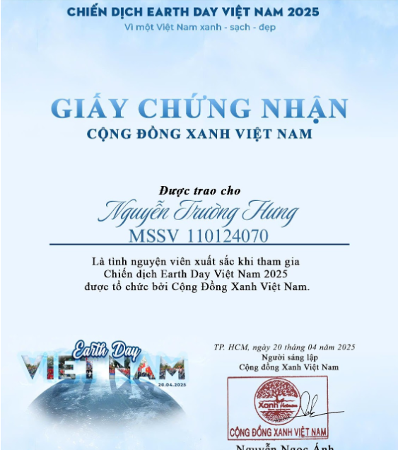
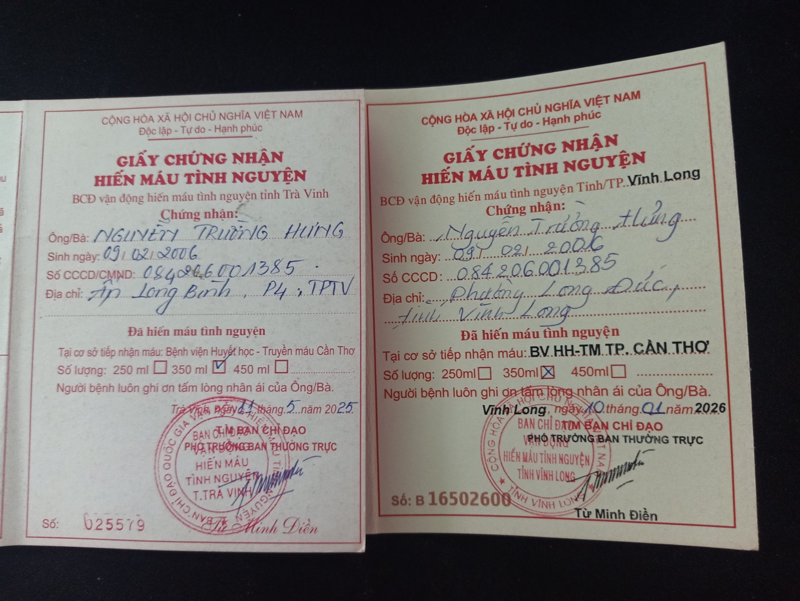

Hoạt động được diễn ra vào ngày 20/04/2025
Tôi tham gia chiến dịch EarthDay cùng các tình nguyện viên với nhiều hoạt động như trồng cây xanh, thu gom rác thải nhựa và tuyên truyền bảo vệ môi trường. Tất cả đều diễn ra trong không khí sôi nổi, đoàn kết và tràn đầy tinh thần trách nhiệm.

Lần 1: 11/05/2025; Lần 2: 10/01/2026
Hiến máu tình nguyện là hành động cho đi máu của mình để giúp đỡ người khác, đặc biệt là những người đang cần máu để điều trị bệnh hoặc cấp cứu. Đây là một hành động tự nguyện, không vì lợi ích cá nhân, mà xuất phát từ lòng nhân ái và trách nhiệm với cộng đồng.
